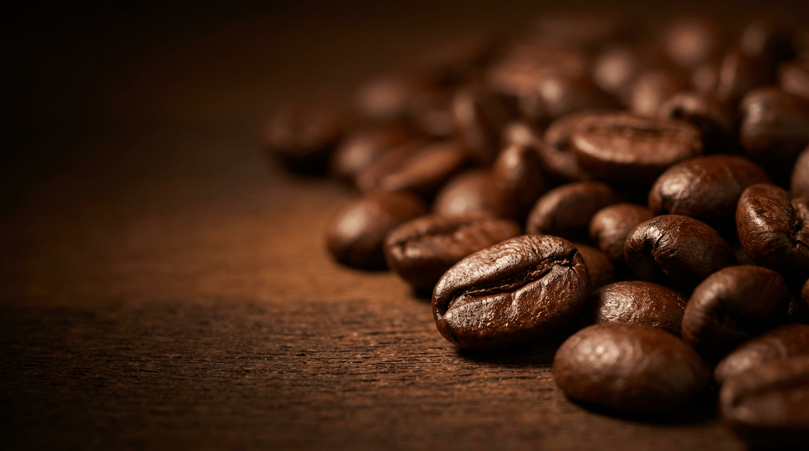

Sweeten Your Next Cup With One Clean Ingredient.
Single-origin Quebec, certified organic, family-owned since 1978. Free shipping on orders over $99 CAD.
One clean ingredient that dissolves straight into a hot cup, no grit, no additives. Here is how to sweeten coffee with maple syrup, which grade to reach for, and a simple maple latte you can make at home.

Amber is the everyday pick for coffee. It holds its flavour against milk and espresso without disappearing into the cup, which makes it the safe choice whether you drink a latte, a cappuccino, or a cup with a splash of cream. Pour Golden into black coffee or a light roast, where its softer, more delicate character has room to show. Reach for Dark when you want the maple to cut through a strong latte or a darker roast. Across all three, one to two teaspoons per cup is the place to start.
Most people sweeten coffee out of habit, not preference. White sugar sits in the bowl, so white sugar goes in the cup. Swap it for maple syrup and the cup tastes rounder, with a soft caramel edge that sugar never gives you. The reason is simple. You are adding one ingredient that grew in a forest, not a refined product with anti-caking agents stirred in.
This guide covers why maple syrup works so well as a coffee sweetener, which Maple Terroir grade fits each coffee style, and a maple latte you can build in your own kitchen. Every grade below is single-origin from one family farm in Quebec's Appalachian Mountains, so the flavour in your cup traces back to one forest rather than a blended industrial supply.
A liquid sweetener dissolves the moment it meets a hot cup. Stir maple syrup into coffee and it disappears into the liquid with no grit left at the bottom and no waiting for granules to break down. That alone solves the most common complaint people have with sweetening a hot drink. You taste the sweetness evenly from the first sip to the last.
Then there is the ingredient list. Pure maple syrup contains one thing, the boiled-down sap of a maple tree. There is no refined white sugar, no caramel colour, and no artificial flavouring. When you stir Maple Terroir into your cup, you are adding the same syrup the Lytton family has bottled from one Quebec sugar bush since 1978, certified organic by Ecocert, Canada Organic, and USDA Organic. People who want to know exactly what goes into their morning cup get a short, honest answer.
Maple also brings flavour that white sugar cannot. Sugar adds sweetness and nothing else. Maple adds sweetness plus soft notes of caramel, vanilla, and butterscotch that sit naturally alongside the roasted character of coffee. The two come from the same warm, toasted family of flavours, so they meet in the middle rather than fighting each other.
That flavour also changes with the grade you reach for, which is why coffee drinkers get to tune the cup. A lighter grade keeps the sweetness quiet and lets the coffee lead. A darker grade pushes the maple forward so you taste it through milk and a bolder roast. White sugar gives you one flat note at every strength, while maple hands you a small dial you can turn toward the coffee you actually drink. The sections below map each Maple Terroir grade to the cup it suits best.
Amber is the headline pick for coffee, and it earns the spot in milk drinks. A latte, a flat white, or a cappuccino puts a lot of milk between you and the espresso, and a softer sweetener gets lost in that. Amber carries enough body to balance the milk and the espresso at once without taking over the cup. If you keep only one bottle by the coffee machine, make it this one.
Golden is the most delicate of the three, which is exactly why it shines in a cup with nothing to hide behind. Black coffee and light roasts leave the sweetener fully exposed, so a gentle, refined maple has room to show its character. Stir a teaspoon of Golden into a clean light roast and you get a quiet sweetness that lifts the coffee rather than masking it.
Dark is the grade for people who want the maple to be unmistakable. It cuts through a strong latte, a bold espresso, or a darker roast where a softer syrup would vanish. If you have ever added sweetener to a heavy cup and tasted nothing, Dark is the answer. Its deeper, more robust flavour stands up to the strongest coffee on the menu.
Cold drinks are where a liquid sweetener really pulls ahead. Granulated sugar refuses to dissolve in a cold cup and settles into a clump at the bottom. Maple syrup is already liquid, so it folds straight into cold brew or iced coffee. Stir it into the coffee before you add ice. Amber suits most iced drinks, and Dark holds its own when the coffee is strong. Browse the full tea and coffee collection if you want the syrups built for the cup alongside the loose-leaf range.
Pull a double shot of espresso, or brew a small, strong cup of coffee. You want it on the stronger side, since the milk will soften it.
Add one to two teaspoons of Amber maple syrup to the hot coffee and stir until it dissolves. Doing this while the coffee is hot means the maple melts in evenly before the milk goes anywhere near it.
Steam or froth your milk of choice and pour it over the sweetened coffee. Finish with a light drizzle of maple on top if you want the aroma to greet you before the first sip. For a stronger maple note, swap the Amber for Dark.
Single-origin Quebec, certified organic, family-owned since 1978. Free shipping on orders over $99 CAD.
Maple syrup works well in coffee because it is a liquid sweetener that dissolves instantly in a hot cup, with no grit at the bottom. It carries one ingredient, pure maple, rather than refined sugar plus additives. Amber suits most cups, since it balances milk and espresso without disappearing into the coffee.
Amber is the everyday pick for coffee. It holds its flavour against milk and espresso without taking over the cup. Golden suits black coffee and light roasts, where its softer character has room to show. Dark suits a strong latte or a darker roast, since it cuts through milk and bolder coffee.
Start with one to two teaspoons per cup and adjust from there. Maple syrup is sweeter by volume than you might expect, so a small pour goes a long way. Stir it in while the coffee is hot so it dissolves fully.
Yes. Maple syrup is already liquid, so it folds into cold brew and iced coffee without the clumping you get from granulated sugar in a cold drink. Stir it into the coffee before you add ice. Amber and Dark both hold up well over ice.